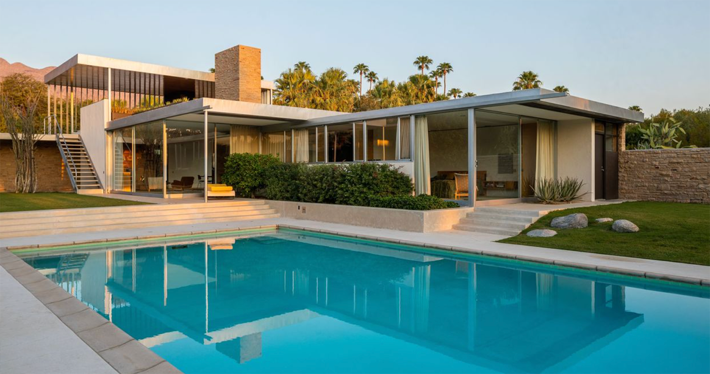
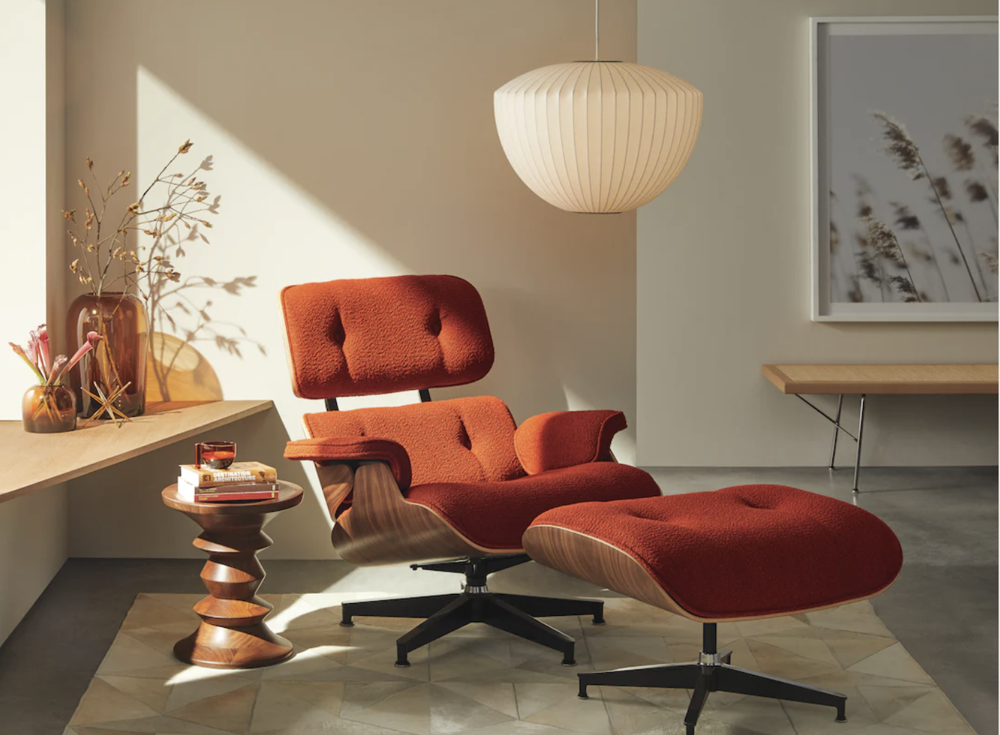

02/14/2024
a visual guide to mid-century modern style

Styling this page with CSS was very fun. I found myself working from top to bottom with the HTML and CSS side by side. The top section was fairly simple after having some practice styling the navigation on my own site and in previous exercises. I went back and forth adjusting the padding and margin to find the spacing that looked most similar to the reference image. I also started scanning the HTML as a whole to see which tags were used repeatedly before deciding how to style them.
This exercise made me appreciate the structure and organization of HTML more. It was easier to start with a larger section and then work my way down to more specific elements inside it, such as the links inside the navigation or the link inside the h1. The wrap class was also extremely helpful because I could adjust the spacing around a larger portion of the page at once.

Adding and resizing the first two images was fairly easy because I could adjust their width using percentages. However, I could not figure out how to get the last three images to sit side by side. I tried making their widths smaller using the aside img selector, but they still did not behave the way I expected. I decided to leave that problem visible rather than use CSS we haven't learned yet.